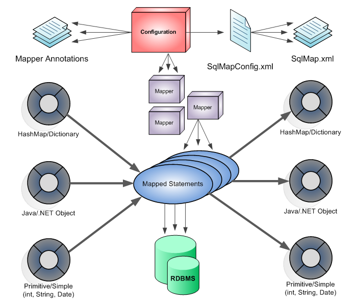

본 장에서는 MyBatis의 개념과 특징, 다운로드 및 사용 방법에 대해 살펴본다.
MyBATIS란?
MyBatis 는 개발자가 지정한 SQL, 저장프로시저 그리고 몇가지 고급 매핑을 지원하는 퍼시스턴스 프레임워크이다.
MyBatis 는 JDBC 코드와 수동으로 셋팅하는 파라미터와 결과 매핑을 제거한다.
MyBatis 는 데이터베이스 레코드에 원시타입과 Map 인터페이스 그리고 자바 POJO 를 설정하고 매핑하기 위해 XML 과 애노테이션을 사용할 수 있다.
기존의 JDBC를 이용하여 프로그래밍하는 방식은 프로그램 소스 안에 SQL문을 작성하였지만, MyBatis를 이용하면 SQL문을 프로그램에서 분리하여 XML 파일에 별도로 작성한다. 따라서 프로그래머가 기존의 JDBC를 사용할 때 보다 프로그래밍하는 부담이 줄어들게 된다. 뿐만 아니라 SQL을 변경하고자 할 경우 기존처럼 프로그램을 수정하는 것이 아니라 XML 파일의 SQL문 만을 변경하면 되기 때문에 SQL 변환이 자유롭다는 특징이 있다.
다음은 MyBatis의 구조를 간단하게 표현한 그림이다.

Configuration 파일(SqlMapConfig.xml) : DB 설정과 트랜잭션 등 Mybatis가 동작하는 규칙을 정의.
매퍼(Mapper) : SQL을 XML에 정의한 매퍼 XML 파일과 SQL을 인터페이스의 메소드마다 애노테이션으로 정의한 매퍼 인터페이스를 의미.
매핑 구문(Mapped Statements) : 조회 결과를 자바 객체에 설정하는 규칙을 나타내는 결과 매핑과 SQL을 XML에 정의한 매핑 구문을 의미.
매핑 구문을 정의하는 방법은 애노테이션과 XML 방식 두 가지가 존재함.
사용자는 CRUD에 대한 각각의 SQL문은 SqlMap XML 파일에 작성하고 이 파일들을 SqlMapConfig XML 파일에 작성하면 MyBatis API를 통해 자동으로 Mapping된 Statement 객체들을 생성하여 이를 통해 DB에 SQL문을 실행하게 된다.
MyBatis는 현재 구글이 인수하였으며 홈페이지 주소는 다음과 같다.
http://blog.mybatis.org/http://mybatis.github.io/mybatis-3/
MyBatis에 대한 다양한 레퍼런스를 제공하며 한글 번역 페이지도 존재하고 있다.( http://mybatis.github.io/mybatis-3/ko/)
MyBatis 다운로드
MyBatis를 사용하기 위해서 Mybatis 관련 jar 파일이 필요하다.
이 jar 파일은 http://repo1.maven.org/maven2/org/mybatis/mybatis/3.2.8/ 페이지에서 다운로드 받을 수 있다.
mybatis-3.2.8.jar를 받아 eclipse에서 추가 해주면 되며 Maven을 사용한다면 다음의 구문을 pom.xml에 추가 해주면 된다.
<dependency>
<groupId>org.mybatis</groupId>
<artifactId>mybatis</artifactId>
<version>3.2.8</version>
</dependency>
Maven을 통하여 Library를 추가하는 방법은 부록2에서 상세히 설명 한다.
{kind=link}